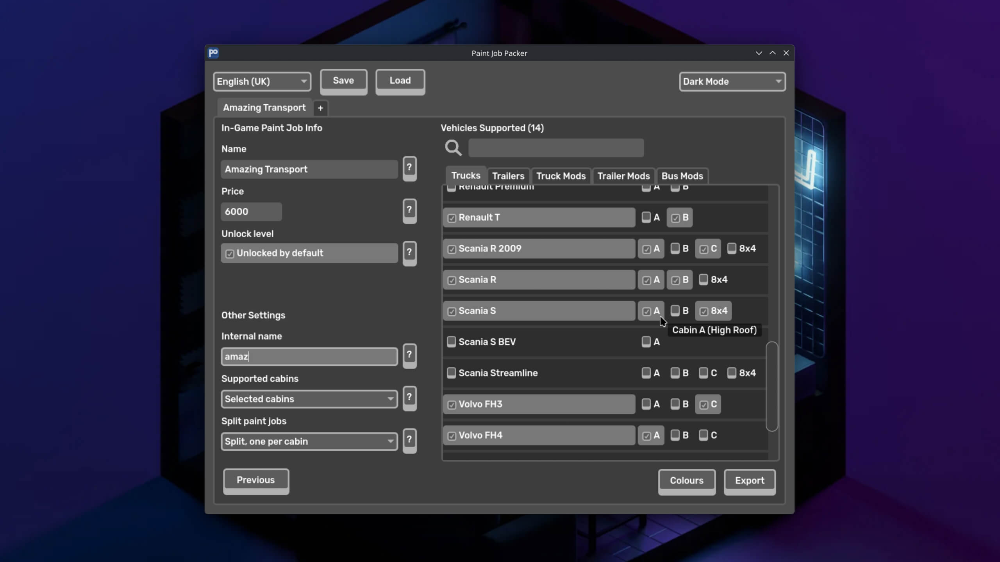

Paint Job Packer
A lightweight paint job mod making tool for ATS and ETS2

Features
- Cross-platform support
- Support for player-owned trailers, including those from DLCs
- Support for trucks using the newer accessory-based paint job system, like the Scania S and MAN TGX Euro 6
- Support for multiple vehicles in a single paint job, and multiple paint jobs in a single mod
- Built-in support for >100 truck and trailer mods, full list here
- Support for separate paint jobs for each cabin of each truck, in case a single texture doesn't work for all of them
- Includes readymade 4k templates for each vehicle, which can be downloaded in PNG and PSD format here (ETS2) and here (ATS)
See the thread on the SCS Forums for more details, and to leave feedback or get support
Download
Latest version: 2.0.1 (released 2026-06-01)
- Fixed crash when clicking export on Windows 11
- Fixed "largest cabin only" selection for Volvo FH6 and RJL's Scanias
- Fixed Volvo FH4, FH5 & FH6, and Schmitz Cargobull S.KO accessory definitions
Full changelog on GitHub
Want to be notified of new releases? Join us on Discord!
macOS (.dmg image, 403.2 MB)
- Tested on macOS 26 Tahoe (Apple silicon) and macOS 10.14 Mojave (Intel)
Paint Job Packer is open source, its source code is available on GitHub
Support Paint Job Packer
If you enjoy Paint Job Packer and you would like to support its development, you can leave me a tip at Ko-fi
Using Paint Job Packer
There's a full video guide to using Paint Job Packer available on YouTube.
Paint Job Packer doesn't make completed mods from the get-go. Instead it makes what I call "custom example mods", giving you all the files you need for your mod, but with placeholders standing in for every image/texture. You then go through and replace all the placeholder images with your own to complete the mod. Since you usually have to test and tweak a paint job many times before it's ready, generating paint jobs this way means you only have to run the program once.